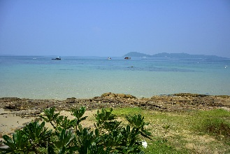
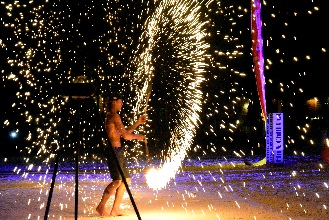

Koh Samet
 Ilha localizada há cerca de 180km de Bangcoc e há 6 km do píer Ban Phe, na cidade de Rayong. O percurso do ferry à ilha leva cerca de 30 minutos.A ilha foi um local seguro de ancoragem para marinheiros desde pelo menos o Século XIII, embora alguns livros também mencionem que as travessias entre Koh Samet e o continente davam oportunidade para piratas emboscarem os marinheiros.
A vila de Na Dan (também grafada como Nah Dan) e a Koh Samet Village existem há cerca de 60 anos.
O Nah Dan Public Pier é o principal píer, que dá acesso à Ko Samet Village.
Há várias praias e baías com areia branca e águas cristalinas, e boa parte das melhores delas está na costa leste, próximas ao Na Dan Public Pier e à Koh Samet Village.
Na costa oeste, a única que chama mais atenção é a baía de Ao Prao.
A ilha possui um terreno com vários morros, o que limita o acesso entre uma praia à outra através de ruas, tornando os ferries, botes e jet skis os principais meios de transporte entre as praias.
Exceto pela época das monções, em Maio, o tempo costuma ser bom no resto do ano.
Como a ilha não é muito grande, você pode dar a volta em toda sua extensão com uma das várias tours oferecidas. O valor varia de ฿$ 400 à ฿$ 700, dependendo do tipo de embarcação e da duração.
Como a ilha faz parte de um parque nacional desde 1981, você paga uma taxa de ฿$ 400 para entrar.
Como chegar à Koh Samet
Em Bangcoc, na estação Ekkamai há ônibus diretos para Ban Phe. Os ônibus saem de hora em hora das 5:00 às 20:00, e a viagem, que leva umas 3h e meia, custa uns ฿$ 200 (com a/c, água mineral e um lanche). Você pode pegar um ônibus, também na estação Ekkamai, para Rayong, que sai das 4:00 às 22:00 (฿$ 150), e de lá pegar um songthaew (uns ฿$ 35) ou mototáxi para Ban Phe.Mas a melhor opção ainda são as minivans do Victory Monument, que vão direto para o píer Ban Phe, e que custam ฿$ 250. O píer, no distrito de Ban Phe, oferece serviços de ferry durante todo o dia. Os preços são de ฿$ 50 por pessoa para Hat Sai Kaeo e ฿$ 60 para Ao Wong Duen, além de outros destinos.
As atrações de Koh Samet
Hat Sai Kaew (Diamond Beach)
Praia com areia branca e fácil acesso desde o píer principal.
É o local mais turístico da ilha, com os resorts e bares mais ocidentalizados.
Se você descer no Nah Dan Pier, pode andar uns 5 ou 10 minutos até a praia, ou pegar um ônibus local (verde) por ฿$ 15. O ônibus deixa os passageiros em várias praias da ilha, e Hat Sai Kaew é a primeira parada.
É o local mais turístico da ilha, com os resorts e bares mais ocidentalizados.
Se você descer no Nah Dan Pier, pode andar uns 5 ou 10 minutos até a praia, ou pegar um ônibus local (verde) por ฿$ 15. O ônibus deixa os passageiros em várias praias da ilha, e Hat Sai Kaew é a primeira parada.

Ao Kiu Na Nai
Difícil de chegar por terra.
A areia é branca, a água é cristalina, a orla está cheia de palmeiras e a praia é bem tranquila.
Um paraíso!
A areia é branca, a água é cristalina, a orla está cheia de palmeiras e a praia é bem tranquila.
Um paraíso!

Ao Phai
Segunda praia depois de Hat Sai Kaew (a primeira é Hin Kok).
É menor e mais tranquila, com poucos restaurantes e hotéis.
Fica há apenas 20 minutos a pé da Hat Sai Kaew.
É menor e mais tranquila, com poucos restaurantes e hotéis.
Fica há apenas 20 minutos a pé da Hat Sai Kaew.
Ao Tubtim
Duas praias e um promontório panorâmico depois e você chega em Ao Tubtim.
É uma praia tão visualmente atrativa quanto as outras da ilha, com uma "ponte" em direção ao mar.
É uma praia tão visualmente atrativa quanto as outras da ilha, com uma "ponte" em direção ao mar.
Ao Cho
A próxima praia após Ao Tubtim, mas para chegar até ela você deve cruzar uma floresta densa, e muito bonita.
Hat Laem Mae Phim
Praia longa, com uma ampla área de areia que desce suavemente até a água.
É ideal para crianças.
Há bastante instalações para turistas, embora sejam bem básicas e a maioria dos estabelecimentos sejam mais voltados às famílias tailandesas.
É ideal para crianças.
Há bastante instalações para turistas, embora sejam bem básicas e a maioria dos estabelecimentos sejam mais voltados às famílias tailandesas.